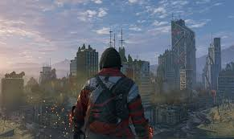

Sports
With the recent exposure to the water, I have a build a habbit of swimming every day, which transformed it into a hobby I love the way it feels, when I'm swimming I don't think about anything except swimming. The whole body is tired and I feel like I am Hungry and Sleepy at the same time.
Learning
I love to learn I'm a qurious man. This brain feels hungry if I'm not learning, then I am frustrated just to give it a mental stimulas I play Physical games(works everytime). I'm interested in learning about computer partes and etc. The knowledge that I receive from this videos and thed Internet over all, is used by me for creatitng different things because why waste your time in just learning let's created thing and have fun you know what I mean.
Books
Books are the vital part of a socity how the books are treated in there libraries is how the next generation turns out said by a very wise writer and I have experienced that to because when I read, I transend into a different dimention when me and my thoughts recide, btw now I i'm reading the only nonfiction so link of boring but good at the same time.
Gaming
We all have been playing game since our childhood and it have been a blast, I have tried different Gonra's
of games and I feel like my childhood was fun, with the first game I every played which was a spider-man game
where to can wing and kick the enemys ass's
Below are the game I play:
Dying light
Assassin's Creed Unity